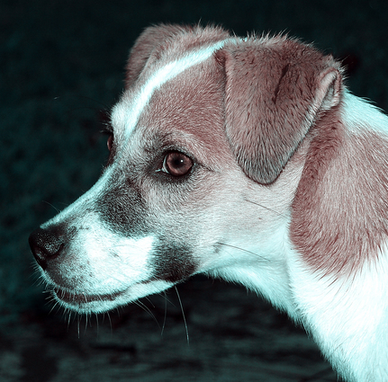

Arribada: Abril 5, 2014
Any de naixement: 2013
Sexe: Mascle
Raça: Mestís
Mida: Mitjà
Aquest és el Jacko! Un gos de mida gran amb un cor gegant! El Jacko ens va enamorar des del primer dia que va arribar a la protectora. És un gos jove, educat, sociable i molt tranquil. El seu estat era lamentable i amb prou feines podia caminar. Encara té la pota inflamada però sembla que ja no li fa tant de mal. Volem una família per a aquest heroi! Una llar còmode on pugui recuperar-se aviat. Un gos noble i jove que canviarà la vida de qui l’adopti. No t’ho pensis més! En Jacko t’espera!

 Arribada: Desembre 24, 2015
Arribada: Desembre 24, 2015 Arribada: Abril 5, 2014
Any de naixement: 2013
Sexe: Mascle
Raça: Teckel
Mida: Petit
En Simba és net, passeja bé i no estira de la corretja. No entén per què no ha tingut la sort d’altres gossos que viuen feliços amb els seus amos. Té moltes i moltes ganes de que l’adoptin i poder estimar i ser estimat!
Arribada: Abril 5, 2014
Any de naixement: 2013
Sexe: Mascle
Raça: Teckel
Mida: Petit
En Simba és net, passeja bé i no estira de la corretja. No entén per què no ha tingut la sort d’altres gossos que viuen feliços amb els seus amos. Té moltes i moltes ganes de que l’adoptin i poder estimar i ser estimat!